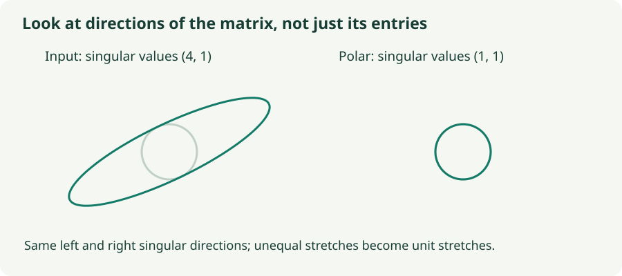

Muon, Part 1: A Matrix Has More Than Coordinates
Jump to the loss-contour trajectory demo ↓
Understand singular directions, momentum, polar updates, and which parameters belong in Muon.
Adam sees a weight matrix as a collection of individually scaled coordinates. Muon uses an additional piece of information: those coordinates form a linear map. A matrix can strongly stretch one input direction and barely affect another even when its individual entries do not make that pattern obvious.
Muon filters gradients with momentum, then transforms the resulting matrix update so its nonzero singular directions have more comparable strengths. This chapter explains the target geometry. Part 2 will explain the fast polynomial iteration that approximates it.
1. Why a layer’s matrix structure matters
For a linear layer $y=Wx$, let $\delta=\partial\ell/\partial y$ be the gradient arriving from later layers. One example contributes
This is an outer product: each input coordinate is coupled with each output-gradient coordinate. For one example it has rank at most one. Batches sum such contributions, so matrix directions can still have very unequal strengths. Treating entries independently does not explicitly recognize those shared directions.
Write a momentum-filtered matrix as $M=U\Sigma V^\top$. Its singular value decomposition separates three actions: $V^\top$ expresses the input in a special orthogonal basis; diagonal $\Sigma$ stretches those directions by nonnegative singular values; $U$ maps them into output directions. A singular value is a strength of the whole map along a direction, not an individual matrix entry.
2. The idealized polar update
For full rank, replace the singular values by ones:
This retains the left and right singular directions while removing their unequal stretch factors. For a square full-rank matrix, $Q^\top Q=QQ^\top=I$: the map preserves lengths. For a rectangular full-rank matrix, only the smaller identity condition is possible. Tall matrices have orthonormal columns; wide matrices have orthonormal rows.
A small example makes the scale change explicit. With $M=\operatorname{diag}(4,1)$, a raw momentum update at rate $\eta$ is $-\eta\operatorname{diag}(4,1)$. The ideal polar update is $-\eta I$. Its first singular direction is no longer four times as strong as the second. This is a deliberate change of update geometry.

Muon changes the matrix added to the parameters. Updating $W\leftarrow W-\eta Q$ does not generally make $W$ orthogonal, even if $Q$ is.
3. A geometric reason for this direction
Suppose we choose a displacement matrix $D$ by minimizing the linearized loss change $\langle G,D\rangle_F=\operatorname{tr}(G^\top D)$, subject to a spectral-norm budget $\|D\|_2\le\eta$. The spectral norm is the largest singular value: it bounds how strongly $D$ can move any unit input vector.
In $G$’s singular bases, the linear objective is a weighted sum of diagonal components, with weights given by the nonnegative singular values. The norm constraint prevents any such component from having magnitude greater than $\eta$. Setting each active component to $-\eta$ achieves the smallest possible sum. Thus an optimal direction is
This differs from a Frobenius-norm budget, whose steepest linearized direction is proportional to $-G$. Different notions of step size produce different directions. In Muon, the input to the matrix transform is momentum-filtered rather than necessarily the current gradient, so this argument motivates the transform; it does not prove each practical step decreases the current loss.
4. Lab: matrix normalization versus entry-wise signs
Construct $M=U\operatorname{diag}(s_1,s_2)V^\top$ using two adjustable rotations. The experiment compares the input, its exact partial polar factor, and the sign of each individual entry. The last is a geometric comparison, not a complete Adam or Lion simulation.
What does the matrix do to a circle?
Each panel transforms the same unit circle. All three panels use the same scale; their matrix entries and computed singular values are listed below them.
- Change only the singular values: for positive values, the exact polar factor stays the same. Its direction depends on $U$ and $V$, not the unequal magnitudes.
- Change a rotation: compare the smooth change in the polar map with the abrupt changes when an individual matrix entry crosses zero in the sign map.
- Set $s_2=0$: the input loses a direction. The partial polar factor has singular values 1 and 0, not 1 and 1.
5. Lab: watch Muon descend through the loss contours
The plot uses the same eight-example quadratic objective as the SGD demo, embedded in a matrix parameter $W=\left[\begin{smallmatrix}w_1&w_2\\0&0\end{smallmatrix}\right]$. For each example, $\ell_i=\tfrac12(w-a_i)^\top H(w-a_i)$, so its matrix gradient has the coordinate gradient in the first row and zeros in the second. The matrix updates preserve this two-dimensional family, making the plotted coordinates the complete evolving parameter state.
Ellipses show equal excess full loss, $\tfrac12w^\top Hw$, with minimum at the origin. The green line is the computed trajectory; the orange point is the current iterate. The second chart reports loss after each optimizer update. A fixed learning rate can leave residual oscillations; this controlled example is not a neural-network benchmark.
Each step forms a 2×2 momentum matrix, optionally applies the Nesterov mixture, normalizes it, and runs the selected number of quintic Newton–Schulz iterations before updating $W$. This rank-one slice shows optimization dynamics; its absent singular direction remains zero.
Muon: parameter path and loss by iteration
Start with five NS iterations per update. Use Step, Run 10 steps, or Play, and compare learning rates 0.08 and 0.02.
Change the curvature ratio and contour rotation to alter the valley. Compare full gradients with sampled batches, then change the NS count while keeping the other controls fixed. The iteration counter in this panel counts training updates; the Part 2 animation instead counts iterations inside one matrix transform.
6. Zero singular values are a real exception
The compact rank-$r$ decomposition is $M=U_r\Sigma_rV_r^\top$. Its canonical partial polar factor is $Q=U_rV_r^\top$. Nonzero singular values become one; zero singular values remain zero. Consequently, $Q$ is not fully semi-orthogonal when the matrix is rank deficient.
One can extend an SVD with arbitrary bases in missing subspaces, but that would add directions not supported by the input. The polynomial iteration used in Muon maps zero to zero and naturally follows the partial-polar behavior. Extremely small singular values also require care: a finite number of iterations may not amplify them all the way to the target range.
The lab computes a high-precision 2×2 reference using an eigendecomposition; it treats eigenvalues of $M^\top M$ below a relative $10^{-12}$ threshold as zero. This is a numerical safeguard for the illustration, not a Muon training hyperparameter.
7. From the idea to a Muon step
One transparent conceptual variant is
$B_t$ is the signed matrix momentum, $\lambda$ is decoupled weight decay, and $c(W)$ is a shape-dependent scaling convention. The exact polar transform is unchanged if its input is multiplied by a positive scalar. That is why an EMA momentum convention and an unnormalized momentum convention can lead to the same ideal polar direction when they differ only by a common factor.
The reference implementation also offers a Nesterov-style mixture: after updating $B_t$, transform $(1-\beta)G_t+\beta B_t$ instead. It uses a fixed number of quintic Newton–Schulz steps and an aspect-ratio factor $\sqrt{\max(1,r/c)}$ for an $r\times c$ matrix. Other implementations expose different scaling conventions; a learning rate is meaningful only alongside that choice.
# Conceptual matrix-only Muon step; no Nesterov mixture.
# polar_approx is derived in Part 2. It is not an exact SVD.
buffer = beta * buffer + (1 - beta) * grad
update = polar_approx(buffer)
shape_scale = max(1, rows / columns) ** 0.5
weight *= 1 - lr * weight_decay
weight -= lr * shape_scale * updateBefore external scaling, an exact rank-$r$ partial polar factor has Frobenius norm $\sqrt r$, because it has $r$ unit singular values. The overall update norm therefore depends on matrix shape and rank even though each active singular direction has unit strength. Approximation error changes that norm further.
8. Which parameters should use it?
The original Muon recipe targets hidden matrix weights. Biases, normalization gains, embeddings, and final output parameters use a complementary optimizer such as AdamW. Matrix shape alone does not capture a parameter’s role: an embedding table is two-dimensional too. Route parameters explicitly by module and intended role, checking that each trainable parameter appears exactly once.
Convolutional tensors can be flattened into a chosen matrix layout, but the grouping determines the geometry. The transform also adds matrix multiplications and temporary storage beyond a momentum buffer. Distributed sharding, tensor sizes, kernel efficiency, and parameter routing all influence wall-clock cost. A lower iteration count or a favorable toy shape is not enough to establish a training speedup.
9. Questions worth answering
No. Global normalization preserves the ratios between singular values. The ideal polar transform equalizes the nonzero singular values, changing the relative strengths of matrix directions.
No. It is a different geometric choice with different computational costs and parameter assumptions. Validate it against a tuned baseline on the actual model and budget.
The exact SVD target is easy to state, but the practical finite polynomial approximation behaves differently. Understanding those differences prevents incorrect claims of exact orthogonality or guaranteed convergence with more iterations.
Sources
Keller Jordan’s Muon design note; Muon reference implementation; related matrix-update geometry notes. The 2×2 calculations and circle experiment are original explanatory constructions.